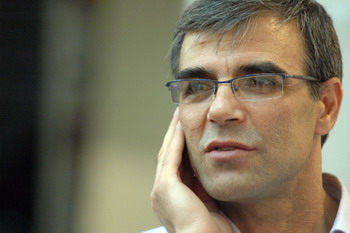

|
|

رضا خندان، همسر نسرین ستوده بازداشت شد
يكشنبه26 دی 1389
تغییر برای برابری- رضا خندان، همسر نسرين ستوده، صبح امروز بر طبق احضاريه ای که هفته پیش دریافت کرده بود، به دادسرای زندان اوین مراجعه کرده و بازداشت شد. اتهام خندان مشخص نیست و به گفته اعضای خانواده وی قرار 50 میلیون کفالت برای آزادی ایشان صادر شده، اما کفالت خواهر خانم ستوده برای آزادی آقای خندان پذيرفته نشده است.
احضار آقاي خندان بعد از اعلام حکم همسرش صورت گرفته است. احتمال می رود فشارهای اخیر به آقای خندان به دلیل مصاحبه ها و تلاش های ایشان برای آزادی همسرش باشد.
نسرین ستوده وکیل و فعال حقوق بشر با وجود چندین اعتصاب غذا در اعتراض به اتهامات غیرقانونی خود و فشارهای بین المللی همچنان در زندان اوین و در سلول انفرادي به سر می برد. وی روز 13 شهریورماه سال جاری بازداشت شد و طی حکمی به 11 سال حبس، 20 سال ممنوعیت خروج از کشور و وکالت محکوم شده است.